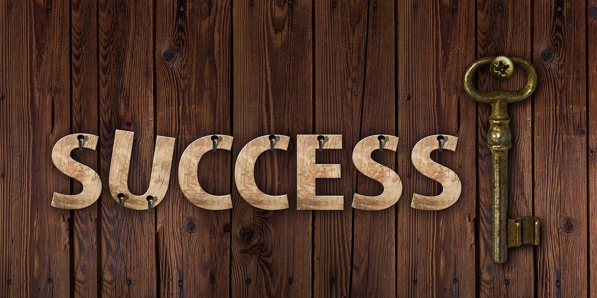

Welcome to the Projects Page
My Web Dev. Journey
Intro

This web development journey has been anything but easy. It started years ago, marked by unfinished tasks and a battle with procrastination. The early days were filled with excitement, but that quickly gave way to frustration as I struggled to stay consistent. Projects would begin with enthusiasm, only to be abandoned halfway through when doubts or distractions crept in. Procrastination wasn’t just a habit; it felt like a constant companion, whispering excuses and delaying progress. Deadlines became flexible, goals felt distant, and progress was slow. Despite all this, there was always a spark—a reminder of why I started in the first place. That spark kept me coming back, even when it felt like I was starting from scratch over and over again.
FreeCodeCamp

Thankfully, FreeCodeCamp became a game-changer, offering an incredible learning platform to keep me on track. Its structured lessons and hands-on projects gave me the guidance I desperately needed. I set a personal goal to earn at least 200 points daily, transforming my sporadic learning into a consistent habit. Some days were tougher than others, with challenges that stretched my understanding and patience, but I stayed committed. That commitment paid off when I completed the first course just before the deadline. It was a small victory, but it felt monumental—a reminder that discipline and focus could overcome the procrastination that once held me back. FreeCodeCamp wasn’t just a resource; it became a foundation, helping me rebuild confidence in my ability to learn and grow.
Struggles and Achievements
At first glance, HTML seemed straightforward, a language of tags and structure that appeared easy to master. However, as I progressed, I realized how many gaps existed in my understanding. Simple concepts I thought I had mastered suddenly seemed more complex when applied in real-world scenarios. I had no choice but to go back to the basics and revisit every step, breaking down even the simplest elements. While it felt repetitive at times, it became a much-needed revision, reinforcing what I knew and clarifying what I didn’t. Each completed section brought a new wave of understanding, and the process turned out to be both enlightening and deeply satisfying. By the end, I didn’t just know HTML—I understood it, and that foundation became a cornerstone for everything I would learn moving forward.
Hosting Our Work

Our lecturer later assigned us to host one of our FreeCodeCamp projects on a free hosting platform. Unfortunately, I was caught up with other responsibilities when the instruction came in on Saturday. Luckily, I had the project ready and delegated the hosting task to one of my team members. They handled it flawlessly, showcasing the amazing teamwork we have in our group, Byte Savants.
Conclusion
This journey has been challenging but rewarding, and the support from my team has been a cornerstone of my progress.